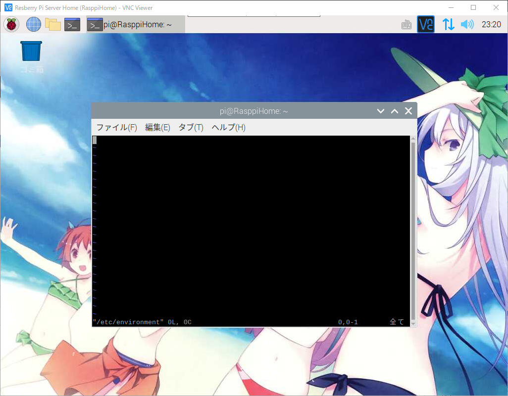
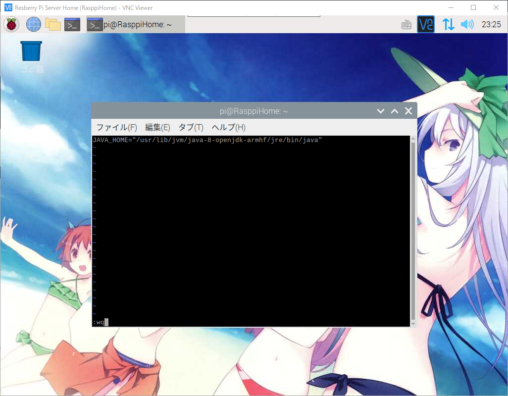
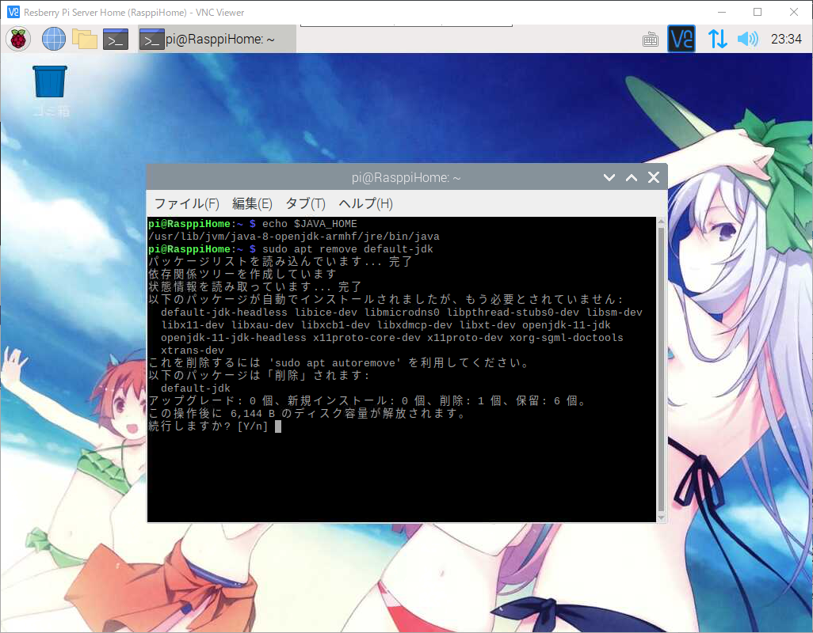
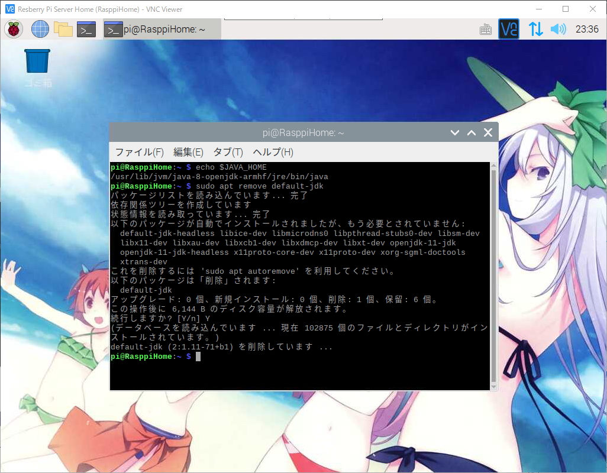

라즈베리파이 또는 리눅스에서 OpenJDK JAVA_HOME설정
라즈베리파이 또는 리눅스에서 OpenJDK JAVA_HOME설정
안녕하세요.
이번에 소개할 내용은 라즈베리파이 또는 리눅스에서 OpenJDK JAVA_HOME설정 입니다.
저번시간에 라즈베리파이 또는 리눅스에서 OpenJDK 설치하기를 하셨으면
이부분을 필수로 설정을 해주셔야만 앞으로 JAVA프로그램을 라즈베리파이에서
구동하실때 문제없이 구동을 하실수가 있겠습니다.
JAVA_HOME은 설치하신 OpenJDK 경로와 버전을 신경쓰지 않고 바로 참조할수 있도록 하는
바로가기 기능이라고 보시면 되겠습니다.
아래는 설치하신 OpenJDK 에 따라서 설치 되어있는 경로 입니다.
1 | # OpenJDK 11 버전 |
이제 본격적으로 설정을 해보도록 하겠습니다.
라즈베리파이 OpenJDK 11 또는 OpenJDK 8 JAVA_HOME 설정하기
우선 라즈베리파이를 VNC를 이용해 접속후 터미널을 실행해 주세요.
그럼 터미널에 아래의 명령어를 입력해 주세요.
1 | # vi 에디터로 environment 파일을 엽니다. |

vi 에디터로 여시게 되면 아무것도 없는 빈페이지가 나오게 됩니다.
그럼 아래의 내용을 입력을 하시면 되겠습니다만
자신이 사용하시는 OpenJDK의 버전에 맞게 경로를 설정을 해주시면 되겠습니다.
1 | # OpenJDK 11을 사용하시면 아래의 내용을 입력해 주시기 바랍니다. |

입력을 다 하셨으면 :wq를 입력후 vi 에디터를 종료 합니다.
그리고 재부팅을 해야만 적용이 되니 아래의 명령어를 입력해서 재부팅을 하겠습니다.
1 | # 재부팅 |
재부팅을 하셨으면 다시 라즈베리파이를 VNC로 실행후 터미널을 실행해 주시기 바랍니다.
아래의 명령어를 입력하셔서 JAVA_HOME이 정상적으로 등록되었는지 확인해 보도록 하겠습니다.
1 | # JAVA_HOME 확인 |
이렇게 해서 JAVA_HOME이 정상 등록이 되었습니다.
만일 설치하신 OpenJDK를 삭제를 하시고 싶으실 경우는 아래와 같이 하시면 되겠습니다.
자신의 환경에 맞게 버전을 선택하셔서 삭제를 해주시기 바랍니다.
1 | # OpenJDK 11 버전을 삭제하실 경우 |
저는 OpenJDK 8을 사용하고 있기에 OpenJDK 11을 삭제하도록 하겠습니다.

삭제 명령어를 하시면 위와같이 삭제를 할건지 물어보게 되면 삭제를 하실경우 Y를 입력해 주세요.

이렇게해서 OpenJDK 삭제가 완료 되었습니다.